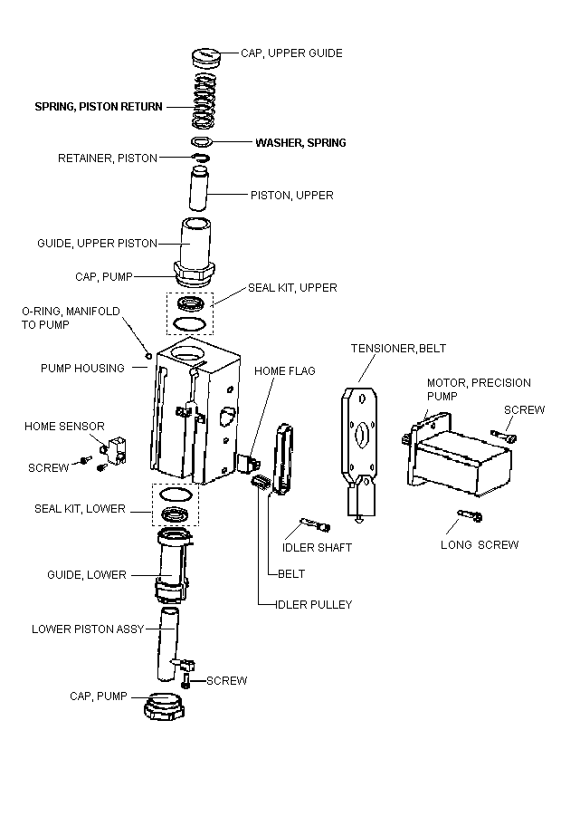
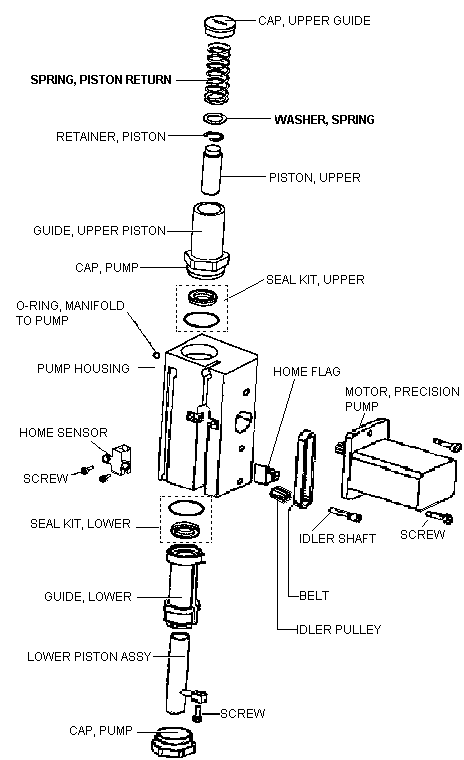

This procedure describes how to replace the precision pump seals and upper piston return spring.
Perform this procedure during all PMC inspections and when an instrument displays poor precision.
Figure 63: New Precision pump assembly components
Note: New precision pump contains belt tensioner. The belt tensioner will be in the tensioned state when the tensioning screw has approximately 1-2 threads exposed. Ensure that the tensioner plate is in this state when reinstalling the pump.

Figure 64: Old Precision pump assembly components

Home the precision pump, and then move the pump to the Low Res Max position to relieve the tension on the piston return spring.
Remove the precision pump.
Caution: All service personnel that handle material sensitive to electrostatic discharge (ESD) used to analyze, repair, or test instruments and test equipment must use ESD precautions and be aware of all ESD policies. Refer to the North American Commercial Operations (NACO), Kit Testing, Handling, and Storage of Electrostatic Discharge (ESD) Service Devices for the Corporate procedure and policy regarding ESD.
Power off the instrument. Open the top and front covers.
Disconnect these connectors from the fluidics interface PCB:
J3 - Precision Pump Home Sensor
J26 - Precision Pump Motor Power
Mark the cable connector location for reinstallation.
Using a 3/32-in Allen wrench, loosen the two captive screws on the right side of the fluidics manifold that secure the precision pump.
Caution: Place towels underneath the pipettor tip to absorb leaking wash buffer.
Lift the pump up and away from the manifold.
Set the pump aside for installation later.
Replace the upper seal and return spring.
Loosen the hexagonal upper pump cap, and then remove the upper piston guide from the pump housing.
Loosen and then remove the slotted upper pump guide cap. Remove the piston and spring from the upper piston guide.
Note: Do not lose the washer that rests on top of the upper piston retainer.
Use the piston to push out and then remove the upper seal.
Use distilled water and a lint-free tissue to remove any dried buffer on the upper piston parts.
Place the new seal onto the piston guide with the exposed spring facing inward, and then install the piston through the seal.
Note: Lubricate the piston with wash buffer to prevent scoring the seal and aid installation.
Place the washer on top of the piston retainer, and then install the piston return spring and upper cap into the upper piston guide.
Note: Use a new return spring, if necessary.
Replace the lower seal.
Remove the hex-head screw that holds the lower piston arm to the home flag.
Loosen and then remove the hexagonal lower pump cap. Remove the lower piston guide and lower piston from the pump housing.
Remove the piston from the lower piston guide. Use the piston to push out and then remove the lower seal.
Remove the old large o-ring from the lower piston guide or from inside the pump housing.
Use distilled water and a lint-free tissue to remove any dried buffer on the lower piston parts and the pump housing.
Place the new lower seal onto the piston guide and install the piston through the seal.
Note:
The lower seal has a slightly larger inside diameter than the upper seal.
The exposed spring inside the seal faces toward the lower piston guide.
Assemble the precision pump.
Replace the large o-ring on the lower piston guide and insert the guide into the pump housing.
Note: The roll pins on the lower piston guide align it to the pump housing.
Tighten the lower hexagonal cap.
Mount the lower piston arm to the home flag using the hex-head screw.
Note: When attaching the home flag to the piston mount, mate the piston mount with the shoulder of the home flag.
Place a new large o-ring inside the upper pump housing, and then insert the upper piston guide into the pump housing.
Tighten the upper hexagonal pump cap.
Install the precision pump.
Confirm the presence of the o-ring for sealing the precision pump to the manifold. Align the precision pump with the manifold block, and slide the pump into place.
Using a 3/32-in Allen wrench, tighten the Allen screws to secure the precision pump.
Connect these connectors to the fluidics interface PCB:
J3 - Precision Pump Home Sensor
J26 - Precision Pump Motor Power
Verify operation of the precision pump.
Complete four pipettor priming cycles and one wash pump prime. Confirm that all the air is removed from the precision pump and manifold.